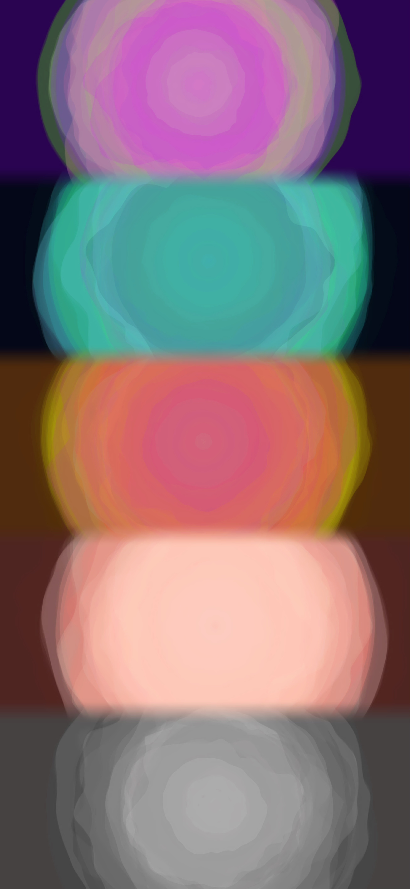

Celestial Pendulum: Harmonies in Motion
A Creative Coding Project by Nina Yang
The idea behind this sketch came from thinking about how people might visualize different colors in their minds
while listening to the same piece of music. Everyone’s experience with music is unique, and this project aims to
capture that by letting people who play with it can interact with the colors they imagine while listening to the
soundtrack. It’s all about creating a personal, immersive experience where the visuals and sounds integrate
together .
This sketch is an interactive experience where you see rings of color on the screen that move and change based
on the music playing in the background. You can click around to switch up the color palettes of the rings,
almost like painting with sound. Also you can switch between different background music tracks using arrow
buttons. The rings don’t just spin or move randomly—they actually respond to the volume of the music, so when
the beat start to play, the rings might spin faster or change shape with the sound.
Click here
